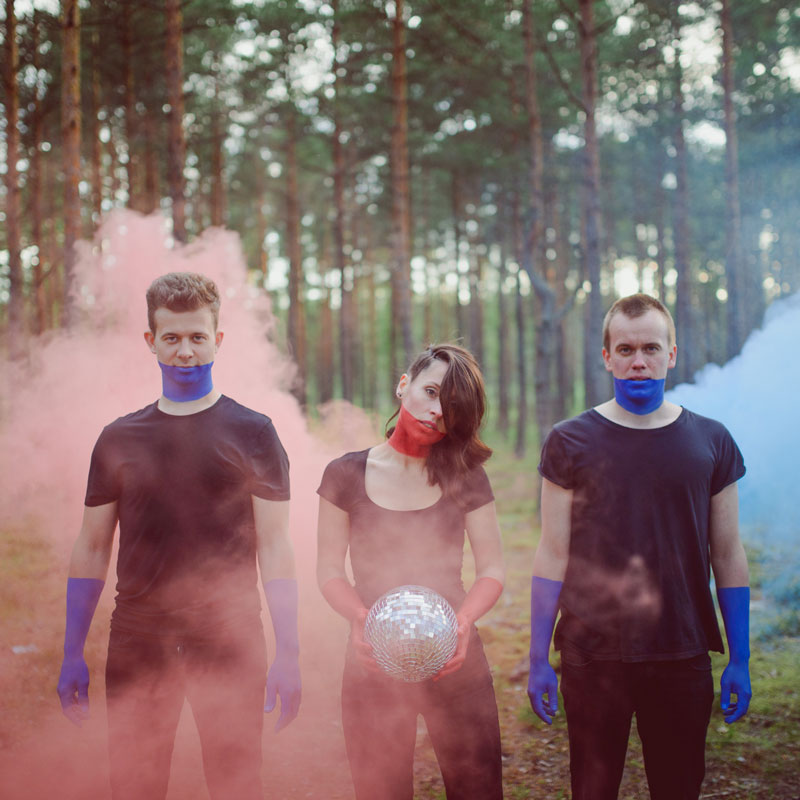

Trad.Attack!
ESTONIA
Trío de pulso agitado y que mezcla con particular estilo la tradición y la modernidad.
Tocaron en 26 países en menos de dos años y han sido galardonados con 14 distinciones en su país natal. El vértigo ha marcado el rumbo artístico de Trad. Attack!, trío estoniano iniciado en 2013 y que con sólo dos títulos publicados –un ep homónimo de 2014 y un largaduración lanzado un año después- ha logrado hacerse un nombre en la escena del Báltico. Su música agitada, tan clásica como actual, se construye con guitarras acústicas de 12 cuerdas, percusiones, flautas, gaitas y arpas de boca. Recursos sonoros que determinan una propuesta pocas veces escuchada y por lo mismo tan vanguardista como irresistible.